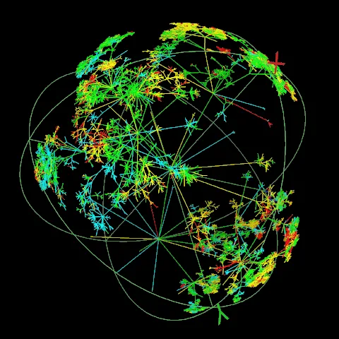

Blog · March 30, 2010
Scholarpedia


Well hello indeed! Scholarpedia, Dr . Eugene Izhikevich’s contribution on the MediaWiki platform, is a knowledge machine. Each article is curated by an expert in its respective field. For example, ‘Facial expression analysis’ is written and moderated by Paul Eckman. It’s still in early development (many articles remain to be written), yet is already a great step in the future of quality information distribution.
This thing is citeable, and a complete history of revisions is available. That in its own right will be an interesting view “into the living process of peer review and progress of ideas that is hidden behind the scenes in traditional publications.” Wiki goes on to say thast “some revisions may well become classics much like a fine vintage of wine.” Fascinating externality. A knowledge project produces more knowledge than anticipated, brilliant! Get on Scholarpedia and give it a try.
A note to my friends of academic prestige: get in while the project’s still young. Better yet, get a group of collaborators and form a couple pages together. Concise descriptions of the concepts comprising your discipline. These pages are a limited resource.
Citeable.
Amy

First published on my old blog, amyrobinson.wordpress.com, March 30, 2010.